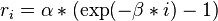
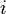
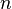
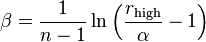

hipart — Fuzzy atom partitioning¶
All HiPart scripts use the modules described below to perform their analysis. The internals of HiPart can also be used to write your own population analysis code.
hipart.context — Contexts instead of global variables¶
- exception hipart.context.ContextError¶
- class hipart.context.Context(filename, options)¶
This class is an extension to the concept of global variables.
It ensures that an entire context of data structures, files and directories is present and sane. One can pass around a context variable instead of the individual global variables.
- check_tag(extra)¶
- Make sure our context is compatible with the data in the workdir.
- num_lebedev¶
- class hipart.context.Options(lebedev=110, do_clean=False, do_work=True, do_output=True, verbose=True, threshold=0.0001, max_iter=500, fix_total_charge=True, do_random=True, maxl=2)¶
- hipart.context.parse_command_line(script_usage)¶
hipart.schemes — Partitioning schemes and derived quantities¶
- exception hipart.schemes.ParseError¶
- class hipart.schemes.BaseScheme(context, extra_tag_attributes)¶
hipart.wavefn — Electronic structure representation¶
- hipart.wavefn.load_wavefunction(filename)¶
- class hipart.wavefn.FCHKWaveFunction(filename, options)¶
- compute_atomic_overlap(grid, weights)¶
- compute_core_density(grid)¶
- compute_density(grid)¶
- compute_density_matrix(num_alpha=None, num_beta=None, do_spin=False)¶
- compute_orbitals(grid)¶
- compute_potential(grid)¶
- compute_spin_density(grid)¶
- compute_valence_density(grid)¶
- get_core_cube(*args, **kwargs)¶
- get_cube_points(pnt_dens=10.0, margin=3, origin=None, axes=None, nrep=None)¶
- get_full_cube(*args, **kwargs)¶
- get_valence_cube(*args, **kwargs)¶
- init_core()¶
- init_naturals(work)¶
- init_valence()¶
- log()¶
- hipart.wavefn.get_num_filled(occupations)¶
- hipart.wavefn.compute_naturals(dmat, num_dof)¶
hipart.atoms and hipart.atomdb — Atomic databases¶
- class hipart.atomdb.Options(lebedev=110, rlow=0.0002, rhigh=20.0, size=100, max_ion=2, qc=False, verbose=True, do_random=True)¶
- hipart.atomdb.run_atomdb(executable, template, atom_numbers, options, directory='.')¶
- hipart.atomdb.main(args=None)¶
- hipart.atomdb.refresh_atomdb(executable, template, atom_numbers, options)¶
hipart.fit — ESP cost functions¶
hipart.grids — Numerical integration grids¶
- class hipart.grids.Grid(prefix, work, points, dump=True, unit_cell=None)¶
- dump(suffix, array, ignore=False)¶
- classmethod from_prefix(prefix, work, unit_cell=None)¶
- get_distances(center)¶
- load(suffix, shape=None)¶
- size¶
- class hipart.grids.AtomicGrid(prefix, work, points, center, rgrid, agrid, dump=True)¶
- classmethod from_parameters(prefix, work, center, rgrid, agrid)¶
- classmethod from_prefix(prefix, work, center, rgrid, agrid)¶
- get_becke_switch(center, k=3)¶
Return Becke weights for two atoms: self and other
- Arguments:
- center – The position of the other nucleus
- Optional argument:
- k – The recursion parameter from Becke’s paper. [default=3]
The returned weight becomes 1 at the center of the grid self and zero at the other nucleus. The weights are evaluated on the grid points of self.
- get_distances(center=None)¶
- get_intweights()¶
- integrate(integrand)¶
- integrate_rcumul(integrand)¶
- integrate_regular_harmonics(integrand, maxl)¶
- integrate_spherical_harmonics(integrand, maxl)¶
- class hipart.grids.CylinderGrid(work, center, axz, zmin, zmax, nz, ncircle, rgrid, dump=True)¶
- integrate(integrand)¶
- integrate_alpha_r(integrand)¶
- class hipart.grids.RBaseIntGrid(rtransform)¶
- get_description()¶
- get_log_spline(y, d=None)¶
- get_spline(y, d=None, tail=None)¶
- get_weights(size=None)¶
- integrate(integrand)¶
- integrate_cumul(integrand)¶
- size¶
- solve_dirichlet(yb, ye, afn, bfn, ffn, theta=0.3, tail=None)¶
Solve the second order ODE with Dirichlet boundary conditions
Arguments:
- yb, ye
- left and right boundary value of the solution
- afn, bfn, ffn
- functions or constants for the ODE
Optional arguments:
- theta
- the collocation parameter (should be between 0.0 and 0.5)
- tail
- A tail function for the solution (part that falls of the right boundary of the cubic spline interval)
The ODE has the following form:
y’‘(x) + a(x)y’(x) + b(x)u(x) = f(x)
The solution is found using a collocation method described in
http://dx.doi.org/10.1016/S0378-4754(00)00194-4 Dyksen, W. R.; Lynch, R. E. Math. Comput. in Sim. 2000, 54, 359-372.
- class hipart.grids.RLinLogIntGrid(r_lin, r_high, size)¶
A grid that starts linearly and that ends logarithmically.
- Arguments:
- r_lin – The range over which the grid is initially almost linear.r_high – The last grid point.size – The number of grid points.
The grid points are given by the expression:

with  going from 1 to , the number of grid points. The parameter is given by:

The first gridpoint is always at r=0.
- get_description()¶
- hipart.grids.get_rgrid_from_description(s)¶
- class hipart.grids.ABaseIntGrid¶
- generate_points(center, rs)¶
- get_description()¶
- integrate(integrand)¶
- minimum(function)¶
- class hipart.grids.ALebedevIntGrid(num_lebedev, do_random=True)¶
- generate_points(center, rs)¶
- get_description()¶
- get_intweights(radial_weights)¶
- integrate(integrand)¶
- integrate_regular_harmonics(integrand, points, center, maxl)¶
- integrate_spherical_harmonics(integrand, points, center, maxl)¶
- maximum(function)¶
- minimum(function)¶
hipart.lebedev_laikov — Lebedev Laikov angular grid data¶
- hipart.lebedev_laikov.get_grid(number)¶
hipart.spline — Cubic spline interpolation¶
hipart.io — IO for Hipart file formats¶
- class hipart.io.Output(directory=None, numbers=None)¶
- active¶
- close(f)¶
- dump_atom_fields(filename, table, labels, name)¶
- dump_atom_matrix(filename, matrix, name)¶
- dump_atom_matrix_mp(filename, matrix, name)¶
- dump_atom_scalars(filename, scalars, name)¶
- dump_atom_tensors(filename, tensors, name)¶
- dump_atom_vectors(filename, vectors, name)¶
- dump_overlap_matrices(filename, overlap_matrices)¶
- dump_radial_fns(filename, rgrid, fns)¶
- open(filename)¶
- hipart.io.dump_atom_scalars(filename, scalars, name, numbers=None)¶
Dump an array of scalar atomic quantities into a text file.
- Arguments:
- filename – The file to dump in.scalars – An array of scalars, e.g. atomic charges.
- Optional arguments:
- numbers – An array with atomic numbers to decorate the filename – the name of the quantity to decorate the file
- hipart.io.load_atom_scalars(filename)¶
Load atomic scalars written with dump_atom_scalars().
- Argument:
- filename – The file to load from.
Returns the array with scalars.
- hipart.io.dump_atom_vectors(filename, vectors, name, numbers=None)¶
Dump an array of atomic 3D-vector quantities into a text file.
- Arguments:
- filename – The file to dump in.vectors – An array of 3D-vectors, e.g. atomic dipoles.
- Optional arguments:
- numbers – An array with atomic numbers to decorate the filename – the name of the quantity to decorate the file
- hipart.io.load_atom_vectors(filename)¶
Load atomic vectors written with dump_atom_vectors().
- Argument:
- filename – The file to load from.
Returns the array with vectors.
- hipart.io.dump_atom_tensors(filename, tensors, name, numbers=None)¶
Dump an array of atomic 3D-tensor quantities into a text file.
- Arguments:
- filename – The file to dump in.tensors – An array of 3D-tensors, e.g. atomic quadrupoles.
- Optional arguments:
- numbers – An array with atomic numbers to decorate the filename – the name of the quantity to decorate the file
- hipart.io.load_atom_tensors(filename)¶
Load atomic tensors written with dump_atom_tensors().
- Argument:
- filename – The file to load from.
Returns the array with tensors.
- hipart.io.dump_atom_matrix(filename, matrix, name, numbers=None)¶
Dump a 2D-array of atomic pair quantities into a text file.
- Arguments:
- filename – The file to dump in.matrix – A 2D-array of atomic pair quantities, e.g. bond orders.
- Optional arguments:
- numbers – An array with atomic numbers to decorate the filename – the name of the quantity to decorate the file
- hipart.io.load_atom_matrix(filename)¶
Load atomic pair quantities written with dump_atom_matrix().
- Argument:
- filename – The file to load from.
Returns the square array with pair quantities.
- hipart.io.dump_atom_matrix_mp(filename, matrix, name, numbers=None)¶
Dump a 4D-array of atomic pair multipole quantities.
- Arguments:
- filename – The file to dump in.matrix – A 2D-array of atomic pair quantities, e.g. bond orders.
- Optional arguments:
- numbers – An array with atomic numbers to decorate the filename – the name of the quantity to decorate the file
- hipart.io.load_atom_matrix_mp(filename)¶
Load atomic pair multipole quantities written with dump_atom_matrix_mp().
- Argument:
- filename – The file to load from.
Returns the square array with pair quantities.
- hipart.io.dump_atom_fields(filename, table, labels, name, numbers=None)¶
Dump a table with multiple scalar atomic quantities into a text file.
- Arguments:
- filename – The file to dump in.table – A 2D-array of atomic scalar quantities, e.g. the atomic multipole expansions. Each column corresponds to a quantity and each row corresponds to an atom.labels – The labels of the atomic quantities. The number of labels and the number of columns in the table must be the same.
- Optional arguments:
- numbers – An array with atomic numbers to decorate the filename – the name of the quantity to decorate the file
- hipart.io.load_atom_fields(filename)¶
Load multiple atomic quantities written with dump_atom_fields().
- Argument:
- filename – The file to load from.
Returns a tuple with two results: (i) the table with atomic scalar quantities and (ii) the labels from the table header.
- hipart.io.dump_overlap_matrices(filename, overlap_matrices, numbers=None)¶
Dump a the atomic overlap matrices into a text file.
- Arguments:
- filename – The file to dump in.overlap_matrices – A list with (square) atomic overlap matrices.
- Optional arguments:
- numbers – An array with atomic numbers to decorate the file
- hipart.io.dump_radial_fns(filename, rgrid, fns)¶
- hipart.io.load_radial_fns(filename)¶
hipart.opts — Command line parsion for hi-*.py scripts¶
hipart.log — Screen output¶

Table Of Contents
- hipart — Fuzzy atom partitioning
- hipart.context — Contexts instead of global variables
- hipart.schemes — Partitioning schemes and derived quantities
- hipart.wavefn — Electronic structure representation
- hipart.atoms and hipart.atomdb — Atomic databases
- hipart.fit — ESP cost functions
- hipart.grids — Numerical integration grids
- hipart.lebedev_laikov — Lebedev Laikov angular grid data
- hipart.spline — Cubic spline interpolation
- hipart.io — IO for Hipart file formats
- hipart.opts — Command line parsion for hi-*.py scripts
- hipart.log — Screen output
- hipart.work — Control temporary work files
Previous topic
Next topic
hipart.gint — (Towards a) Gaussian integrals library